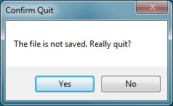
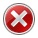
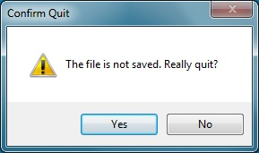

Message Boxes
The MessageBox
class (found in the System.Windows.Forms
namespace) provides a simple mechanism for displaying a message
and obtaining one of a few simple responses from the user. The
most common usage of a MessageBox is to call one of its
various Show methods, each of which is static.
The
simplest Show
method takes a string as its only parameter. The method
then displays this string in a modal dialog containing an
"OK" button. Thus, for example,
MessageBox.Show("Hello world!");
will display the following dialog:

Because the dialog is modal, it will block all other interaction with
the program until the user closes it by clicking either the "OK"
button or the "X" in the upper right. Furthermore, the
Show method will not return until that time.
Other Show methods allow greater customization of a
MessageBox. For example, one Show
method takes as an additional parameter a second string
giving a caption for the MessageBox. Thus, the statment,
MessageBox.Show("Hello world!", "Hello");
will display the following modal dialog:

Other Show methods allow the buttons to be customized. For
example, one Show
method takes, as its third parameter, an
element from the MessageBoxButtons
enumeration.
This enumeration
contains the following values:
- MessageBoxButtons.AbortRetryIgnore: Buttons labeled
"Abort", "Retry", and "Ignore" are shown.
- MessageBoxButtons.OK: A single button labeled "OK" is
shown.
- MessageBoxButtons.OKCancel: Buttons labeled "OK" and
"Cancel" are shown.
- MessageBoxButtons.RetryCancel: Buttons labeled "Retry"
and "Cancel" are shown.
- MessageBoxButtons.YesNo: Buttons labeled "Yes" and "No"
are shown.
- MessageBoxButtons.YesNoCancel: Buttons labeled "Yes",
"No", and "Cancel" are shown.
The values above containing the word, "Cancel", cause the "X" in the
upper-right of the dialog to be enabled. Clicking this button in
these cases is equivalent to clicking the "Cancel" button. The
value, MessageBoxButtons.OK, also enables this "X" button,
but in this case, clicking this button is equivalent to clicking
the "OK" button. Using a Show without a
MessageBoxButtons parameter also gives this behavior. For
all other MessageBoxButtons values, this "X" button is
disabled.
In order to provide appropriate functionality to each of the buttons,
each Show
method returns a value of type DialogResult.
This type is another enumeration
containing
the following values to indicate which button the user clicked:
- DialogResult.Abort
- DialogResult.Cancel
- DialogResult.Ignore
- DialogResult.No
- DialogResult.None (this value won't be returned by any of
the Show methods)
- DialogResult.OK
- DialogResult.Retry
- DialogResult.Yes
Suppose, for example, that we are writing a document formatter or some
other application in which the user builds a document. If the
user attempts to exit the program when the document is unsaved, we
would like to give an opportunity to save the document. We can
accomplish this with the following code:
DialogResult result = MessageBox.Show("The file is not saved. Really quit?",
"Confirm Quit", MessageBoxButtons.YesNo);
if (result == DialogResult.Yes)
{
Application.Exit();
}
The first statement displays the following dialog:

Again, because the dialog is modal, the Show method does not
return until the user closes the dialog by clicking one of the two
buttons (the "X" in the upper right is disabled). When the user
does this, the dialog closes, and the
Show method returns either DialogResult.Yes or
DialogResult.No to indicate which button the user clicked.
If the user clicked the "Yes" button, then the if-statement
will cause the program to terminate. Otherwise, the program will
continue with whatever code follows (probably nothing more, as the
program will need to await further user action).
We can also decorate a MessageBox with an icon that indicates
what type of message it is. This requires another
Show method having a fourth parameter of
type MessageBoxIcon.
MessageBoxIcon is another enumeration. Some of its
values are:
- MessageBoxIcon.Error:

- MessageBoxIcon.Information:

- MessageBoxIcon.None (no icon)
- MessageBoxIcon.Question (Microsoft® recommends avoiding
this, although they use it in Visual Studio® 2013):
- MessageBoxIcon.Warning:

This enumeration contains a few other values as well, but they
currently are simply duplicate values for the above icons. To add
a warning icon to the above example, we could replace the first
statement with:
DialogResult result = MessageBox.Show("The file is not saved. Really quit?",
"Confirm Quit", MessageBoxButtons.YesNo, MessageBoxIcon.Warning);
This will display the following dialog:

Notice that in the above example, the "Yes" button has the focus;
i.e., pressing "Enter" has the same effect as clicking this
button. It is usually desirable to have the safest response as
the default - in this case, the "No" button. To achieve this, a
Show
method having a
fifth parameter, of type MessageBoxDefaultButton,
is required. MessageBoxDefaultButton is another
enumeration having the following values to select an appropriate
button to be the default:
- MessageBoxDefaultButton.Button1
- MessageBoxDefaultButton.Button2
- MessageBoxDefaultButton.Button3
Thus, the following statement:
DialogResult result = MessageBox.Show("The file is not saved. Really quit?",
"Confirm Quit", MessageBoxButtons.YesNo, MessageBoxIcon.Warning,
MessageBoxDefaultButton.Button2);
produces a dialog similar to the one above, but having the "No" button
as its default.
There are other Show methods that allow additional fine-tuning;
however, the ones described here cover most of the
functionality. For details on other Show methods, see
the documentation
for the MessageBox class.